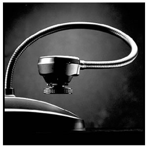
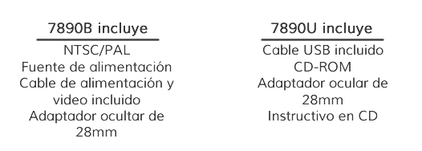
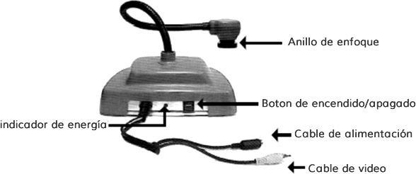

LDM
Manual de Operación de la Cámara Digital

RAM: 64 MB o superior
Procesador a 233 MHz
Puerto USB
Microsoft Windows 98SE o superior
Microsoft Internet Explorer 4.0
(El video no es compatible con NT)
Nunca apunte la cámara directamente al sol. Dirigir la lente de la cámara directamente a la luz del sol decolorara el filtro del chip CMOS, lo cual generara imágenes difusas.
Información para el usuario
NOTA: Este equipo fue probado y cumple con los lineamientos para componentes digitales de clase B, conforme al apartado 15 de las normas de la FCC (Comisión Federal de Comunicaciones de EUA). Estos lineamientos están diseñados para proporcionar la protección suficiente contra daños causados por interferencia en una instalación eléctrica residencial. Este equipo genera, usa e irradia ondas de radio frecuencia, por lo que si no es instalado y utilizado de acuerdo con las instrucciones, puede provocar interferencias que perjudiquen la radio comunicación. Sin embargo, no hay garantía de que no se presentaran interferencias en algunas instalaciones.
Las especificaciones del producto están sujetas a cambios sin previo aviso.
1.-Saque la cámara de su empaque
2.-Conecte el cable de alimentación y los cables de video
3.-Encienda la cámara.
Ahora esta lista para ser utilizada. No se requiere ningún ensamblado especial.

Conecte el cable de video en la entrada marcada como "Video in" de su pantalla/monitos, VCR o video proyector (solo para el modelo 7890B).
Nota: consulte el manual de usuario cuando quiera usar el equipo con cualquiera de estos dispositivos.
Simplemente conecte la Terminal de la fuente localizada al final del cable de alimentación incluido. Posteriormente, conecte el otro extremo del cable a la Terminal eléctrica de 110 o 120 volts. El botón de encendido/apagado esta localizado en la parte de atrás de su cámara el estado de la alimentación eléctrica es indicada por la luz roja situada junto al botón de encendido/apagado.
No use alguna otra fuente de alimentación (incluso si esta se ajusta a los conectores). Este tipo de fuentes pueden generar voltajes o polaridades incorrectas. Este tipo de acciones pueden dañar seriamente su cámara y anular su garantía. Si necesita una fuente de alimentación de repuesto, contacte directamente con su proveedor o con su distribuidor. Asegúrese de usar el voltaje de alimentación correcto (110V o 120V) dependiendo de su región.

TV/Monitor |
Conecte el cable de video en la entrada correspondiente de su TV/monitor. Si su equipo no cuenta con entradas de video disponibles, necesitará un modulador RF o una grabadora VCR. Consulte el instructivo de su TV/monitor para revisar los procedimientos de operación. |
| VCR | Grabadora) conecte el cable de video de la cámara (solo para el modelo NSSC) en la entrada de video del VCR, después conecte el correspondiente del VCR a la televisión. Consulte el instructivo de su VCR para revisar los procedimientos de operación. |
| Video proyector | Conecte el cable de video de la cámara en la entrada de recepción de señales de video del proyector. Consulte el instructivo de su video proyector para revisar los procedimientos de operación. |
| Computadora | fPara conectar la cámara a una computadora, la PC deberá contar con un puerto USB disponible. Para realizar la conexión simplemente inserte el extremo libre del cable USB (solo para el modelo 7890U) en el puerto de la computadora. Consulte el instructivo de su PC para revisar los procedimientos de operación |
El anillo de enfoque ubicado en la cabeza de la cámara, es un sistema de enfoque basado en caucho estriado con lentes de 6mm. Para enfocar un objetivo, simplemente gire el anillo hasta obtener una imagen clara.
NOTA: La lente esta fijada a la cámara y no debe ser removida de su lugar. Tenga cuidado buscando la distancia focal óptima, evitando girar el anillo hasta los extremos en ambas direcciones.
La cámara incluye un adaptador ocular de microscopio de 28mm, el cual permitirá al equipo ser adaptado con microscopios y otros dispositivos. El adaptador de 28mm se ajusta a la mayoría de los microscopios.
NOTA: Antes de instalar el adaptador, mida el tamaño del diámetro exterior del ocular del microscopio.
1.- Para obtener el máximo aumento, gire el anillo en sentido de las manecillas del reloj hasta llegar a la máxima rotación.
2.-Para instalar el adaptador, deslícelo sobre el ocular del microscopio.
3.-Fije la cámara al adaptador ocular. Posteriormente, deslice suavemente la cabeza de la cámara en el adaptador yalineé las lentes oculares.
Cargar el software USB
Inserte el disco incluido dentro de la unidad de CD de su PC y siga las instrucciones.
NOTA: Use únicamente partes y accesorios originales, ya que están hechos específicamente para la cámara Vision Viewer. Cualquier falla provocada por la utilización de partes no originales, será motivo para la invalidez de la garantía.